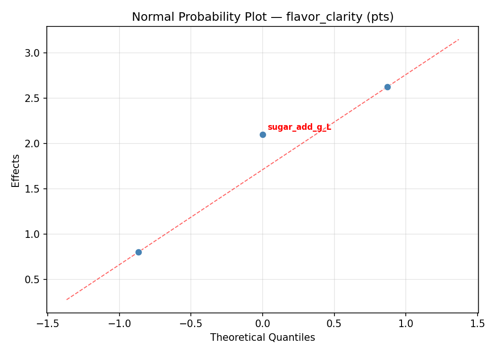
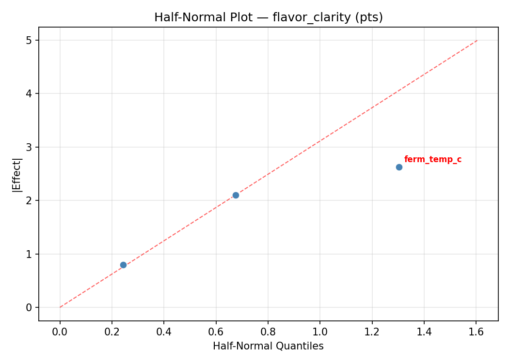
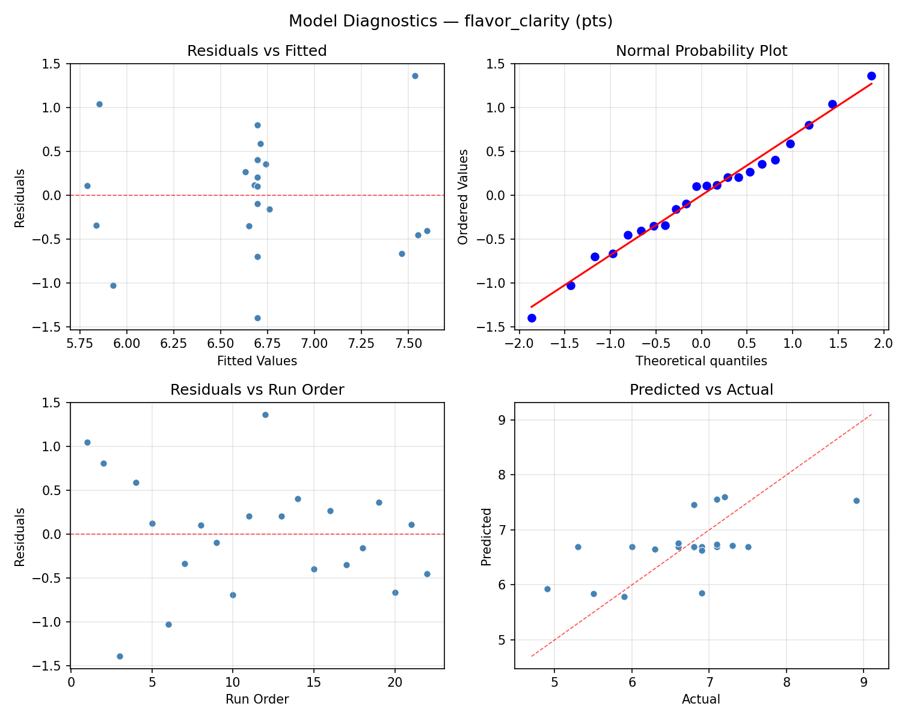
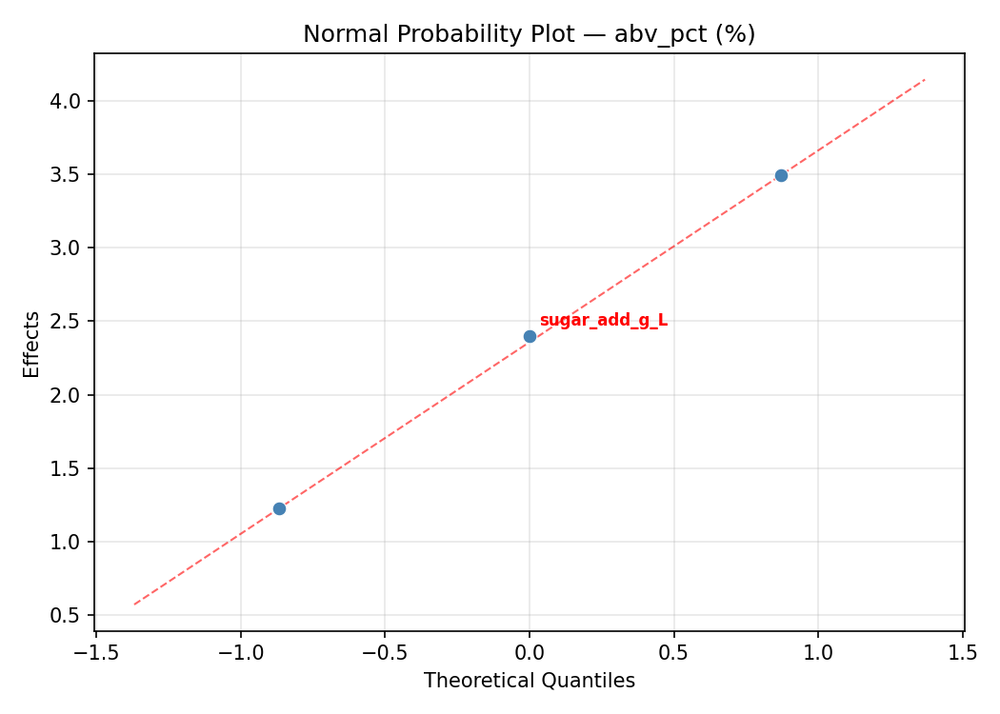
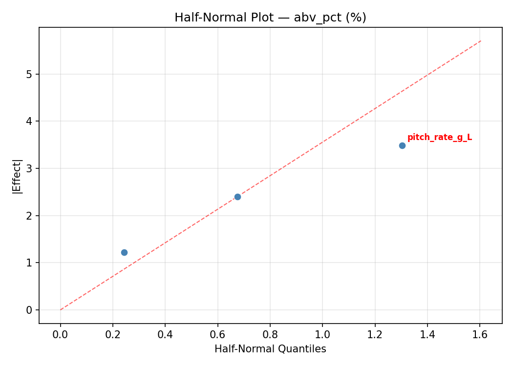

Summary
This experiment investigates hard cider fermentation. Central composite design to maximize flavor clarity and target ABV by tuning yeast pitch rate, fermentation temperature, and sugar addition.
The design varies 3 factors: pitch rate g L (g/L), ranging from 0.5 to 2.0, ferm temp c (C), ranging from 12 to 22, and sugar add g L (g/L), ranging from 0 to 50. The goal is to optimize 2 responses: flavor clarity (pts) (maximize) and abv pct (%) (maximize). Fixed conditions held constant across all runs include apple variety = mixed_cider, yeast = champagne.
A Central Composite Design (CCD) was selected to fit a full quadratic response surface model, including curvature and interaction effects. With 3 factors this produces 22 runs including center points and axial (star) points that extend beyond the factorial range.
Quadratic response surface models were fitted to capture potential curvature and factor interactions. The RSM contour plots below visualize how pairs of factors jointly affect each response.
Key Findings
For flavor clarity, the most influential factors were sugar add g L (43.0%), ferm temp c (30.1%), pitch rate g L (26.9%). The best observed value was 8.9 (at pitch rate g L = 0.5, ferm temp c = 22, sugar add g L = 0).
For abv pct, the most influential factors were ferm temp c (52.7%), sugar add g L (26.0%), pitch rate g L (21.3%). The best observed value was 8.8 (at pitch rate g L = 1.25, ferm temp c = 17, sugar add g L = 25).
Recommended Next Steps
- Run confirmation experiments at the predicted optimal settings to validate the model.
- Consider whether any fixed factors should be varied in a future study.
Experimental Setup
Factors
| Factor | Low | High | Unit |
|---|
pitch_rate_g_L | 0.5 | 2.0 | g/L |
ferm_temp_c | 12 | 22 | C |
sugar_add_g_L | 0 | 50 | g/L |
Fixed: apple_variety = mixed_cider, yeast = champagne
Responses
| Response | Direction | Unit |
|---|
flavor_clarity | ↑ maximize | pts |
abv_pct | ↑ maximize | % |
Configuration
{
"metadata": {
"name": "Hard Cider Fermentation",
"description": "Central composite design to maximize flavor clarity and target ABV by tuning yeast pitch rate, fermentation temperature, and sugar addition"
},
"factors": [
{
"name": "pitch_rate_g_L",
"levels": [
"0.5",
"2.0"
],
"type": "continuous",
"unit": "g/L"
},
{
"name": "ferm_temp_c",
"levels": [
"12",
"22"
],
"type": "continuous",
"unit": "C"
},
{
"name": "sugar_add_g_L",
"levels": [
"0",
"50"
],
"type": "continuous",
"unit": "g/L"
}
],
"fixed_factors": {
"apple_variety": "mixed_cider",
"yeast": "champagne"
},
"responses": [
{
"name": "flavor_clarity",
"optimize": "maximize",
"unit": "pts"
},
{
"name": "abv_pct",
"optimize": "maximize",
"unit": "%"
}
],
"settings": {
"operation": "central_composite",
"test_script": "use_cases/240_cider_making/sim.sh"
}
}
Experimental Matrix
The Central Composite Design produces 22 runs. Each row is one experiment with specific factor settings.
| Run | pitch_rate_g_L | ferm_temp_c | sugar_add_g_L |
|---|
| 1 | 1.25 | 17 | 25 |
| 2 | 2 | 12 | 50 |
| 3 | 0.5 | 22 | 0 |
| 4 | 1.25 | 26.1287 | 25 |
| 5 | 1.25 | 17 | 25 |
| 6 | -0.119306 | 17 | 25 |
| 7 | 1.25 | 17 | -20.6435 |
| 8 | 1.25 | 17 | 25 |
| 9 | 2 | 22 | 0 |
| 10 | 2.61931 | 17 | 25 |
| 11 | 1.25 | 17 | 25 |
| 12 | 1.25 | 7.87129 | 25 |
| 13 | 1.25 | 17 | 25 |
| 14 | 0.5 | 12 | 50 |
| 15 | 1.25 | 17 | 25 |
| 16 | 2 | 12 | 0 |
| 17 | 1.25 | 17 | 70.6435 |
| 18 | 2 | 22 | 50 |
| 19 | 1.25 | 17 | 25 |
| 20 | 0.5 | 12 | 0 |
| 21 | 0.5 | 22 | 50 |
| 22 | 1.25 | 17 | 25 |
Step-by-Step Workflow
1
Preview the design
$ python doe.py info --config use_cases/240_cider_making/config.json
2
Generate the runner script
$ python doe.py generate --config use_cases/240_cider_making/config.json \
--output use_cases/240_cider_making/results/run.sh --seed 42
3
Execute the experiments
$ bash use_cases/240_cider_making/results/run.sh
4
Analyze results
$ python doe.py analyze --config use_cases/240_cider_making/config.json
5
Get optimization recommendations
$ python doe.py optimize --config use_cases/240_cider_making/config.json
6
Multi-objective optimization
With 2 competing responses, use --multi to find the best compromise via Derringer–Suich desirability.
$ python doe.py optimize --config use_cases/240_cider_making/config.json --multi
7
Generate the HTML report
$ python doe.py report --config use_cases/240_cider_making/config.json \
--output use_cases/240_cider_making/results/report.html
Features Exercised
| Feature | Value |
|---|
| Design type | central_composite |
| Factor types | continuous (all 3) |
| Arg style | double-dash |
| Responses | 2 (flavor_clarity ↑, abv_pct ↑) |
| Total runs | 22 |
Analysis Results
Generated from actual experiment runs using the DOE Helper Tool.
Response: flavor_clarity
Top factors: sugar_add_g_L (43.0%), ferm_temp_c (30.1%), pitch_rate_g_L (26.9%).
ANOVA
| Source | DF | SS | MS | F | p-value |
|---|
| Source | DF | SS | MS | F | p-value |
| pitch_rate_g_L | 4 | 2.3229 | 0.5807 | 2.479 | 0.1188 |
| ferm_temp_c | 4 | 1.6129 | 0.4032 | 1.721 | 0.2289 |
| sugar_add_g_L | 4 | 3.4220 | 0.8555 | 3.652 | 0.0494 |
| Lack | of | Fit | 2 | 5.7117 | 2.8559 |
| Pure | Error | 7 | 1.6400 | | |
| Error | 9 | 7.3517 | 0.2343 | | |
| Total | 21 | 14.7095 | 0.7005 | | |
Pareto Chart

Main Effects Plot

Normal Probability Plot of Effects

Half-Normal Plot of Effects

Model Diagnostics

Response: abv_pct
Top factors: ferm_temp_c (52.7%), sugar_add_g_L (26.0%), pitch_rate_g_L (21.3%).
ANOVA
| Source | DF | SS | MS | F | p-value |
|---|
| Source | DF | SS | MS | F | p-value |
| pitch_rate_g_L | 4 | 0.9882 | 0.2470 | 0.442 | 0.7760 |
| ferm_temp_c | 4 | 7.4315 | 1.8579 | 3.322 | 0.0622 |
| sugar_add_g_L | 4 | 1.7732 | 0.4433 | 0.793 | 0.5586 |
| Lack | of | Fit | 2 | 22.5053 | 11.2527 |
| Pure | Error | 7 | 3.9150 | | |
| Error | 9 | 26.4203 | 0.5593 | | |
| Total | 21 | 36.6132 | 1.7435 | | |
Pareto Chart

Main Effects Plot

Normal Probability Plot of Effects

Half-Normal Plot of Effects

Model Diagnostics

Response Surface Plots
3D surfaces fitted with quadratic RSM. Red dots are observed data points.
abv pct ferm temp c vs sugar add g L

abv pct pitch rate g L vs ferm temp c

abv pct pitch rate g L vs sugar add g L

flavor clarity ferm temp c vs sugar add g L

flavor clarity pitch rate g L vs ferm temp c

flavor clarity pitch rate g L vs sugar add g L

Multi-Objective Optimization
When responses compete, Derringer–Suich desirability finds the best compromise.
Each response is scaled to a 0–1 desirability, then combined via a weighted geometric mean.
Overall Desirability
D = 0.6758
Per-Response Desirability
| Response | Weight | Desirability | Predicted | Dir |
|---|
flavor_clarity |
1.5 |
|
7.50 0.6364 7.50 pts |
↑ |
abv_pct |
1.0 |
|
7.50 0.7397 7.50 % |
↑ |
Recommended Settings
| Factor | Value |
|---|
pitch_rate_g_L | 1.25 g/L |
ferm_temp_c | 17 C |
sugar_add_g_L | 25 g/L |
Source: from observed run #2
Trade-off Summary
Sacrifice = how much worse than single-objective best.
| Response | Predicted | Best Observed | Sacrifice |
|---|
abv_pct | 7.50 | 8.80 | +1.30 |
Top 3 Runs by Desirability
| Run | D | Factor Settings |
|---|
| #12 | 0.6214 | pitch_rate_g_L=1.25, ferm_temp_c=17, sugar_add_g_L=-20.6435 |
| #14 | 0.5504 | pitch_rate_g_L=1.25, ferm_temp_c=17, sugar_add_g_L=25 |
Model Quality
| Response | R² | Type |
|---|
abv_pct | 0.6389 | quadratic |
Full Multi-Objective Output
============================================================
MULTI-OBJECTIVE OPTIMIZATION
Method: Derringer-Suich Desirability Function
============================================================
Overall desirability: D = 0.6758
Response Weight Desirability Predicted Direction
---------------------------------------------------------------------
flavor_clarity 1.5 0.6364 7.50 pts ↑
abv_pct 1.0 0.7397 7.50 % ↑
Recommended settings:
pitch_rate_g_L = 1.25 g/L
ferm_temp_c = 17 C
sugar_add_g_L = 25 g/L
(from observed run #2)
Trade-off summary:
flavor_clarity: 7.50 (best observed: 8.90, sacrifice: +1.40)
abv_pct: 7.50 (best observed: 8.80, sacrifice: +1.30)
Model quality:
flavor_clarity: R² = 0.5962 (quadratic)
abv_pct: R² = 0.6389 (quadratic)
Top 3 observed runs by overall desirability:
1. Run #2 (D=0.6758): pitch_rate_g_L=1.25, ferm_temp_c=17, sugar_add_g_L=25
2. Run #12 (D=0.6214): pitch_rate_g_L=1.25, ferm_temp_c=17, sugar_add_g_L=-20.6435
3. Run #14 (D=0.5504): pitch_rate_g_L=1.25, ferm_temp_c=17, sugar_add_g_L=25
Full Analysis Output
=== Main Effects: flavor_clarity ===
Factor Effect Std Error % Contribution
--------------------------------------------------------------
sugar_add_g_L 2.0000 0.1784 43.0%
ferm_temp_c 1.4000 0.1784 30.1%
pitch_rate_g_L 1.2500 0.1784 26.9%
=== ANOVA Table: flavor_clarity ===
Source DF SS MS F p-value
-----------------------------------------------------------------------------
pitch_rate_g_L 4 2.3229 0.5807 2.479 0.1188
ferm_temp_c 4 1.6129 0.4032 1.721 0.2289
sugar_add_g_L 4 3.4220 0.8555 3.652 0.0494
Lack of Fit 2 5.7117 2.8559 12.190 0.0052
Pure Error 7 1.6400 0.2343
Error 9 7.3517 0.2343
Total 21 14.7095 0.7005
=== Summary Statistics: flavor_clarity ===
pitch_rate_g_L:
Level N Mean Std Min Max
------------------------------------------------------------
-0.119306 1 7.1000 0.0000 7.1000 7.1000
0.5 4 6.3750 0.7890 5.3000 7.1000
1.25 12 6.6417 0.7879 4.9000 7.5000
2 4 7.2500 1.1091 6.6000 8.9000
2.61931 1 6.0000 0.0000 6.0000 6.0000
ferm_temp_c:
Level N Mean Std Min Max
------------------------------------------------------------
12 4 6.9000 1.4900 5.3000 8.9000
17 12 6.7083 0.7428 4.9000 7.5000
22 4 6.7250 0.3500 6.3000 7.1000
26.1287 1 5.5000 0.0000 5.5000 5.5000
7.87129 1 6.8000 0.0000 6.8000 6.8000
sugar_add_g_L:
Level N Mean Std Min Max
------------------------------------------------------------
-20.6435 1 4.9000 0.0000 4.9000 4.9000
0 4 6.7750 0.2363 6.6000 7.1000
25 12 6.7500 0.6186 5.5000 7.5000
50 4 6.8500 1.5177 5.3000 8.9000
70.6435 1 6.9000 0.0000 6.9000 6.9000
=== Main Effects: abv_pct ===
Factor Effect Std Error % Contribution
--------------------------------------------------------------
ferm_temp_c 2.5333 0.2815 52.7%
sugar_add_g_L 1.2500 0.2815 26.0%
pitch_rate_g_L 1.0250 0.2815 21.3%
=== ANOVA Table: abv_pct ===
Source DF SS MS F p-value
-----------------------------------------------------------------------------
pitch_rate_g_L 4 0.9882 0.2470 0.442 0.7760
ferm_temp_c 4 7.4315 1.8579 3.322 0.0622
sugar_add_g_L 4 1.7732 0.4433 0.793 0.5586
Lack of Fit 2 22.5053 11.2527 20.120 0.0013
Pure Error 7 3.9150 0.5593
Error 9 26.4203 0.5593
Total 21 36.6132 1.7435
=== Summary Statistics: abv_pct ===
pitch_rate_g_L:
Level N Mean Std Min Max
------------------------------------------------------------
-0.119306 1 6.4000 0.0000 6.4000 6.4000
0.5 4 5.4750 2.3908 3.5000 8.8000
1.25 12 5.5500 1.0247 3.3000 7.5000
2 4 5.3750 1.5196 4.2000 7.6000
2.61931 1 5.9000 0.0000 5.9000 5.9000
ferm_temp_c:
Level N Mean Std Min Max
------------------------------------------------------------
12 4 5.0250 1.8264 3.5000 7.6000
17 12 5.8333 0.7608 4.5000 7.5000
22 4 5.8250 2.0662 4.2000 8.8000
26.1287 1 3.3000 0.0000 3.3000 3.3000
7.87129 1 5.6000 0.0000 5.6000 5.6000
sugar_add_g_L:
Level N Mean Std Min Max
------------------------------------------------------------
-20.6435 1 4.5000 0.0000 4.5000 4.5000
0 4 5.3500 1.7292 3.5000 7.6000
25 12 5.7500 0.9904 3.3000 7.5000
50 4 5.5000 2.2420 4.0000 8.8000
70.6435 1 5.4000 0.0000 5.4000 5.4000
Optimization Recommendations
=== Optimization: flavor_clarity ===
Direction: maximize
Best observed run: #12
pitch_rate_g_L = 0.5
ferm_temp_c = 22
sugar_add_g_L = 0
Value: 8.9
RSM Model (linear, R² = 0.0940, Adj R² = -0.0570):
Coefficients:
intercept +6.6955
pitch_rate_g_L -0.1230
ferm_temp_c +0.2084
sugar_add_g_L -0.1888
RSM Model (quadratic, R² = 0.2767, Adj R² = -0.2658):
Coefficients:
intercept +6.3889
pitch_rate_g_L -0.1230
ferm_temp_c +0.2084
sugar_add_g_L -0.1888
pitch_rate_g_L*ferm_temp_c -0.0875
pitch_rate_g_L*sugar_add_g_L -0.2125
ferm_temp_c*sugar_add_g_L -0.1625
pitch_rate_g_L^2 +0.2483
ferm_temp_c^2 -0.0067
sugar_add_g_L^2 +0.2183
Curvature analysis:
pitch_rate_g_L coef=+0.2483 convex (has a minimum)
sugar_add_g_L coef=+0.2183 convex (has a minimum)
ferm_temp_c coef=-0.0067 negligible curvature
Predicted optimum (from linear model, at observed points):
pitch_rate_g_L = 0.5
ferm_temp_c = 22
sugar_add_g_L = 0
Predicted value: 7.2158
Surface optimum (via L-BFGS-B, linear model):
pitch_rate_g_L = 0.5
ferm_temp_c = 22
sugar_add_g_L = 0
Predicted value: 7.2158
Model quality: Weak fit — consider adding center points or using a different design.
Factor importance:
1. ferm_temp_c (effect: 1.5, contribution: 45.3%)
2. pitch_rate_g_L (effect: 1.0, contribution: 29.2%)
3. sugar_add_g_L (effect: 0.9, contribution: 25.5%)
=== Optimization: abv_pct ===
Direction: maximize
Best observed run: #17
pitch_rate_g_L = 1.25
ferm_temp_c = 17
sugar_add_g_L = 25
Value: 8.8
RSM Model (linear, R² = 0.0527, Adj R² = -0.1051):
Coefficients:
intercept +5.5591
pitch_rate_g_L +0.1070
ferm_temp_c +0.3370
sugar_add_g_L +0.0815
RSM Model (quadratic, R² = 0.1570, Adj R² = -0.4752):
Coefficients:
intercept +5.4499
pitch_rate_g_L +0.1070
ferm_temp_c +0.3370
sugar_add_g_L +0.0815
pitch_rate_g_L*ferm_temp_c +0.3125
pitch_rate_g_L*sugar_add_g_L -0.2625
ferm_temp_c*sugar_add_g_L +0.1625
pitch_rate_g_L^2 +0.2846
ferm_temp_c^2 -0.1504
sugar_add_g_L^2 +0.0296
Curvature analysis:
pitch_rate_g_L coef=+0.2846 convex (has a minimum)
ferm_temp_c coef=-0.1504 concave (has a maximum)
sugar_add_g_L coef=+0.0296 negligible curvature
Notable interactions:
pitch_rate_g_L*ferm_temp_c coef=+0.3125 (synergistic)
Predicted optimum (from linear model, at observed points):
pitch_rate_g_L = 1.25
ferm_temp_c = 26.1287
sugar_add_g_L = 25
Predicted value: 6.1743
Surface optimum (via L-BFGS-B, linear model):
pitch_rate_g_L = 2
ferm_temp_c = 22
sugar_add_g_L = 50
Predicted value: 6.0846
Model quality: Weak fit — consider adding center points or using a different design.
Factor importance:
1. ferm_temp_c (effect: 3.2, contribution: 52.9%)
2. pitch_rate_g_L (effect: 2.2, contribution: 37.2%)
3. sugar_add_g_L (effect: 0.6, contribution: 9.9%)